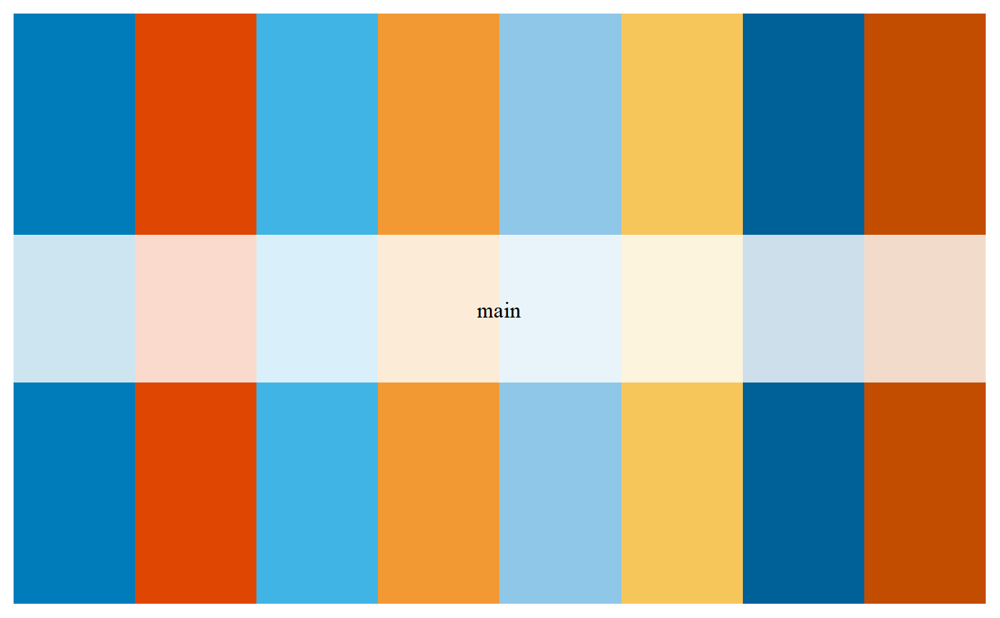
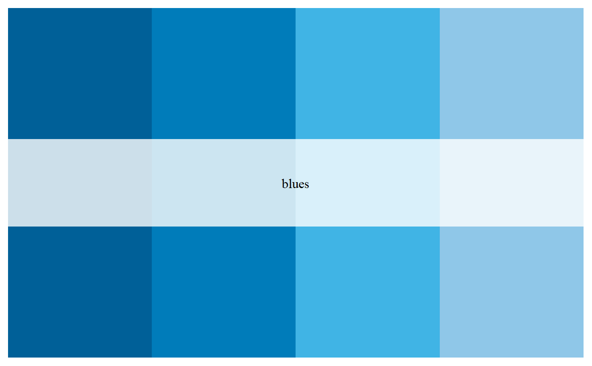
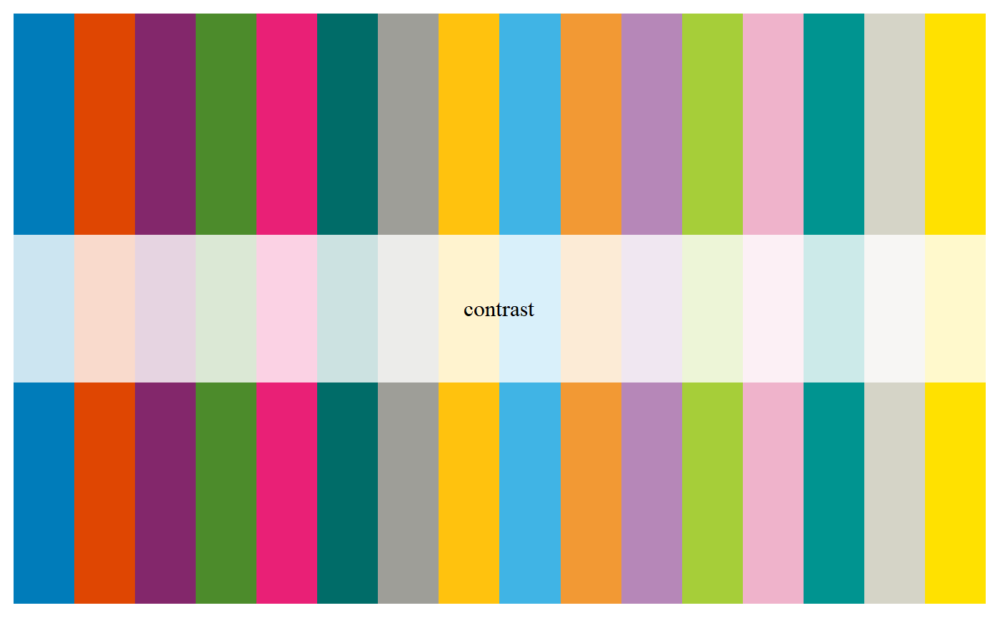
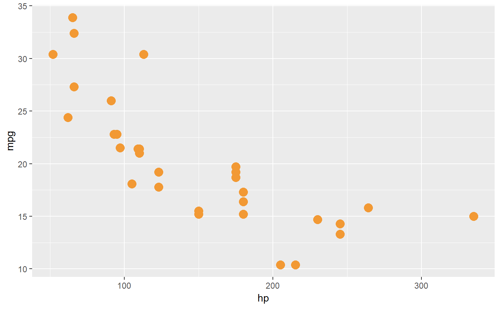
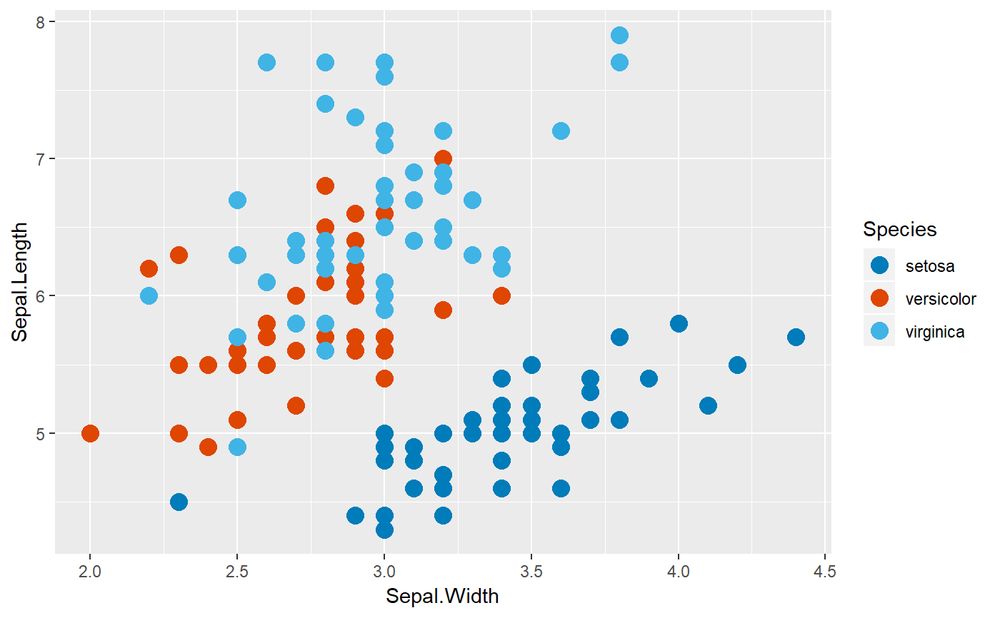
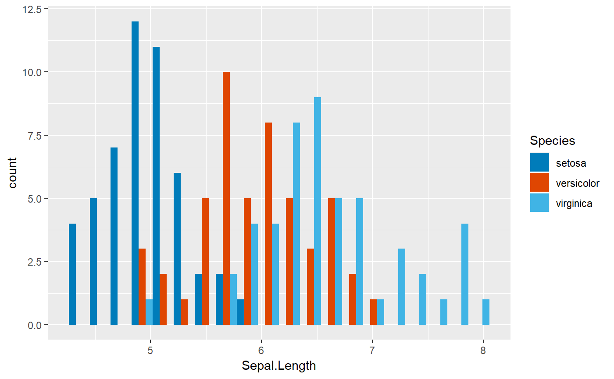

Access the colors in a MSK branded color palette
msk_palette.RdMSK brand colors can be viewed and used in plotting
msk_palette(name = "main", type = c("discrete", "continuous"), n)
Arguments
| name | Name of desired palette, supplied in quotes. Choices are: "main" (default), "blues", "oranges", "contrast" |
|---|---|
| type | Either "continuous" or "discrete". Use continuous if you want to automatically interpolate between colours. |
| n | Number of colors desired. If omitted, uses all colors, or the needed number of colors if less than the total. @importFrom graphics rgb rect par image text @importFrom grDevices colorRampPalette |
Value
A vector of colours.
Examples
msk_palette("blues")msk_palette("contrast")# use a single brand color from a palette # here using the fourth color from the "main" palette ggplot(mtcars, aes(hp, mpg)) + geom_point(size = 4, color = msk_palette("main")[4])# use a discrete color scale - uses fixed colors from the requested palette ggplot(iris, aes(Sepal.Width, Sepal.Length, color = Species)) + geom_point(size = 4) + scale_color_manual(values = msk_palette("main"))# use a continuous color scale - interpolates between colors ggplot(iris, aes(Sepal.Width, Sepal.Length, color = Sepal.Length)) + geom_point(size = 4, alpha = .6) + scale_color_gradientn(colors = msk_palette("blues", type = "continuous"))# use a fill color ggplot(iris, aes(x = Sepal.Length, fill = Species)) + geom_histogram(bins = 20, position = "dodge") + scale_fill_manual(values = msk_palette("main"))